重装和spawn方式
背景
研究iOS逆向期间，需要找某些iOS的ObjC函数的调用的时机和地方
以便于研究代码逻辑。
但是有时候，虽然找到并给函数写了hook代码，但是却没有触发
所以需要想办法，找函数被触发调用的时机
后来有了新思路：
- 该函数很可能是：app初始化时，仅允许一次
- 所以后续调试，无法再次触发
- 如何触发
- 模拟环境入手：重新安装app
- 且用Spawn方式启动，模拟重新安装后首次启动
- 或许就能触发
- 且用Spawn方式启动，模拟重新安装后首次启动
- 从代码调用入手：借助于IDA的交叉引用xref，references to，继续向上找函数调用的地方
- （虽然往往也很复杂，不好找，但）往往最后也是你能找到调用的地方的
- 模拟环境入手：重新安装app
举例
-[WASignalKeyStore saveToKeychainIdentityKeypairData:registrationIdData:]
想要寻找函数：
-[WASignalKeyStore saveToKeychainIdentityKeypairData:registrationIdData:]
的调用逻辑，何时被调用的，就遇到了：
写了hook代码：
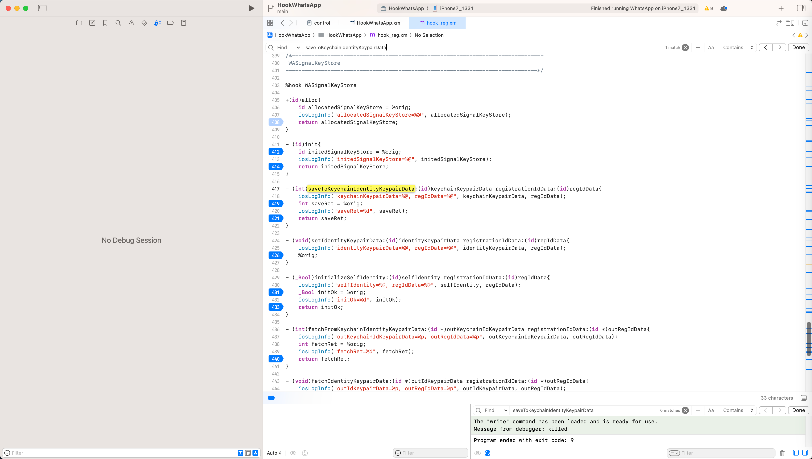
但是却没触发
然后继续寻找其是如何被调用的
而后是：
借助于=主要用到了：
IDA中的：
List cross references to- 从别的哪里调用到此处函数的
Jump to xref to operand- 其他哪里有，互相的交叉引用
如此，一点点向上层，去找调用到此处代码的地方，去找更上层的调用
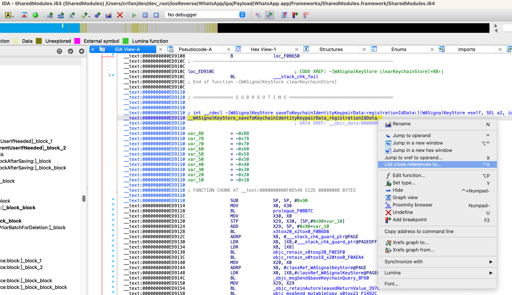
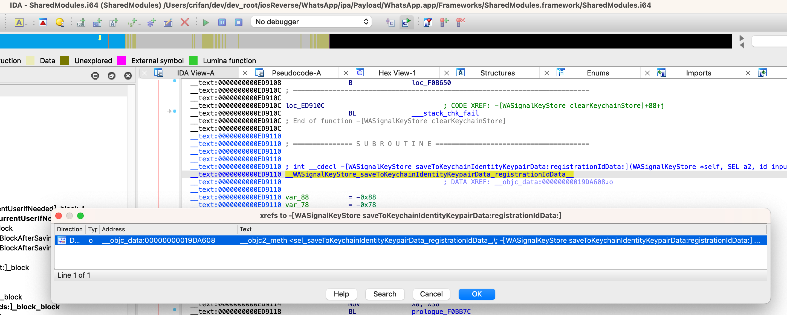
Down o __objc_data:00000000019DA608 __objc2_meth <sel_saveToKeychainIdentityKeypairData_registrationIdData_,\; -[WASignalKeyStore saveToKeychainIdentityKeypairData:registrationIdData:] ...
-》
__objc_data:00000000019DA608 __objc2_meth <sel_saveToKeychainIdentityKeypairData_registrationIdData_,\ ; -[WASignalKeyStore saveToKeychainIdentityKeypairData:registrationIdData:] ...
__objc_data:00000000019DA608 aI32081624, \
__objc_data:00000000019DA608 __WASignalKeyStore_saveToKeychainIdentityKeypairData_registrationIdData__>
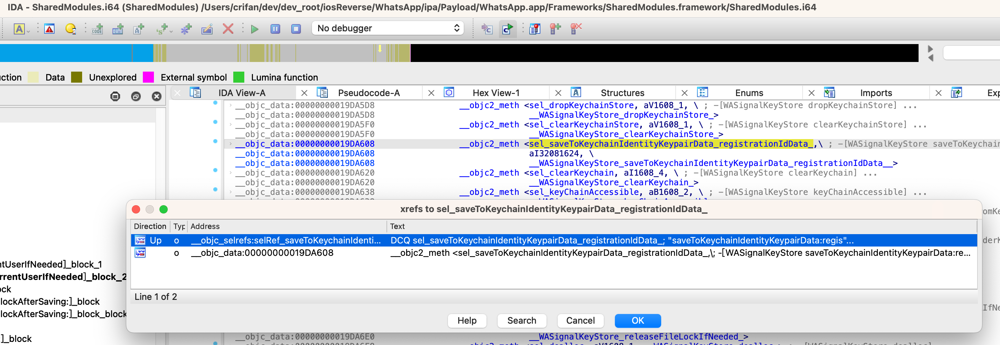
__objc_selrefs:0000000001911B78 selRef_saveToKeychainIdentityKeypairData_registrationIdData_ DCQ sel_saveToKeychainIdentityKeypairData_registrationIdData_
__objc_selrefs:0000000001911B78 ; DATA XREF: _objc_msgSend$saveToKeychainIdentityKeypairData_registrationIdData_↑o
__objc_selrefs:0000000001911B78 ; _objc_msgSend$saveToKeychainIdentityKeypairData_registrationIdData_+4↑r
__objc_selrefs:0000000001911B78 ; "saveToKeychainIdentityKeypairData:regis"...
-》
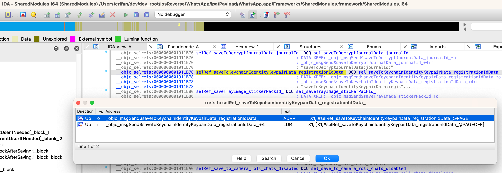
Up o _objc_msgSend$saveToKeychainIdentityKeypairData_registrationIdData_ ADRP X1, #selRef_saveToKeychainIdentityKeypairData_registrationIdData_@PAGE
Up r _objc_msgSend$saveToKeychainIdentityKeypairData_registrationIdData_+4 LDR X1, [X1,#selRef_saveToKeychainIdentityKeypairData_registrationIdData_@PAGEOFF]
-》
__objc_stubs:0000000000FDD7A0 _objc_msgSend$saveToKeychainIdentityKeypairData_registrationIdData_
__objc_stubs:0000000000FDD7A0 ; CODE XREF: -[WASignalKeyStore setIdentityKeypairData:registrationIdData:]+4C↑p
__objc_stubs:0000000000FDD7A0 ; -[WASignalKeyStore fetchFromKeychainIdentityKeypairData:registrationIdData:]+128↑p
__objc_stubs:0000000000FDD7A0 ADRP X1, #selRef_saveToKeychainIdentityKeypairData_registrationIdData_@PAGE
__objc_stubs:0000000000FDD7A4 LDR X1, [X1,#selRef_saveToKeychainIdentityKeypairData_registrationIdData_@PAGEOFF]
__objc_stubs:0000000000FDD7A8 ADRP X16, #_objc_msgSend_ptr@PAGE
__objc_stubs:0000000000FDD7AC LDR X16, [X16,#_objc_msgSend_ptr@PAGEOFF]
__objc_stubs:0000000000FDD7B0 BR X16
__objc_stubs:0000000000FDD7B0 ; End of function _objc_msgSend$saveToKeychainIdentityKeypairData_registrationIdData_
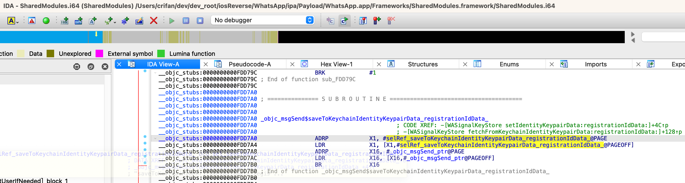
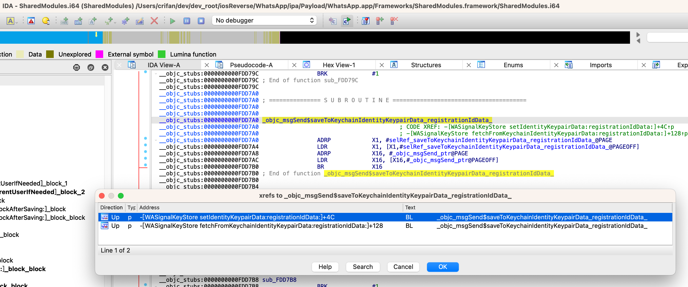
Up p -[WASignalKeyStore setIdentityKeypairData:registrationIdData:]+4C BL _objc_msgSend$saveToKeychainIdentityKeypairData_registrationIdData_
Up p -[WASignalKeyStore fetchFromKeychainIdentityKeypairData:registrationIdData:]+128 BL _objc_msgSend$saveToKeychainIdentityKeypairData_registrationIdData_
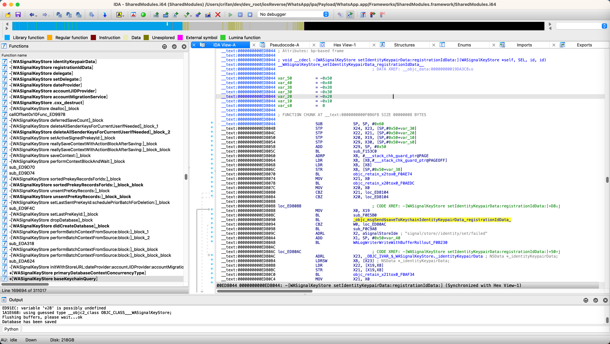
至此，找到了，上层的调用：
-[WASignalCoordinator setIdentityKeyPair:signedPreKey:registrationID:]-[WASignalKeyStore initializeSelfIdentity:registrationIdData:]
继续向上找：
从：
-[WASignalCoordinator setIdentityKeyPair:signedPreKey:registrationID:]
继续找：
objc_msgSend_setIdentityKeyPair_signedPreKey_registrationID__8120
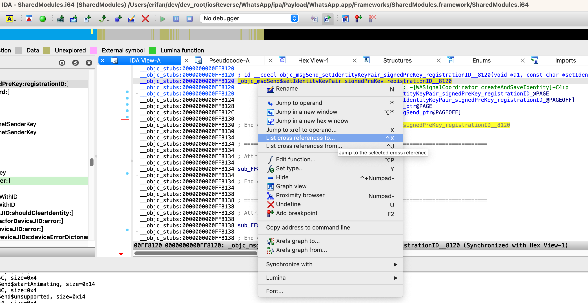
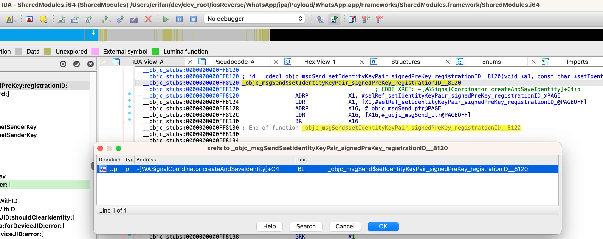
最后找到了：
-[WASignalCoordinator createAndSaveIdentity]
其中的：
bool __cdecl -[WASignalCoordinator createAndSaveIdentity](WASignalCoordinator *self, SEL a2)
{
...
if ( (signal_protocol_key_helper_generate_registration_id_BF8C(&a1, 1LL) & 0x80000000) != 0 )
...
else
{
v12 = (void *)x20tox0_x19tox2_F0B95C();
v17 = (unsigned int)objc_msgSend_setIdentityKeyPair_signedPreKey_registrationID__8120(
v12,
str_setIdentityKeyPair_signedPreKey_registrationID_,
identityKeyPair,
signedPreKey,
registrationID)
...
}
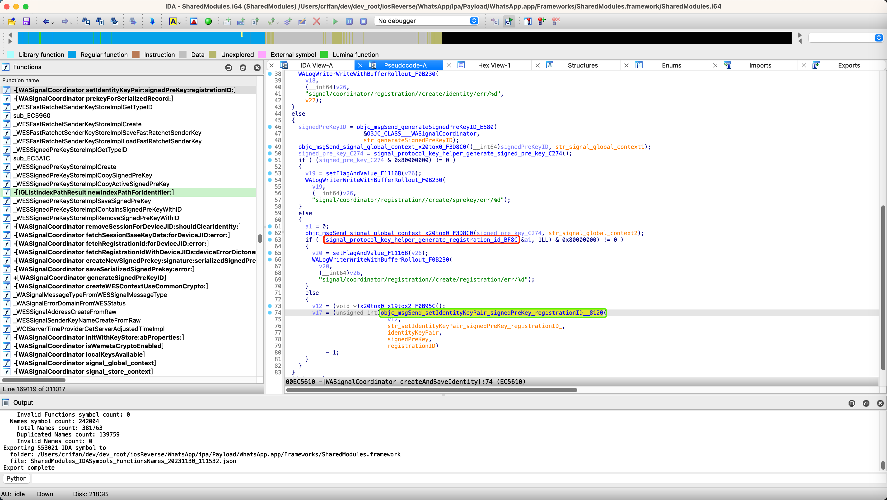
中的：
signal_protocol_key_helper_generate_registration_id- 后优化改名为：
signal_protocol_key_helper_generate_registration_id_BF8C
- 后优化改名为：
就很像是我们要找的代码逻辑：
用于初始化生成RegistrationId=regId=RegistrationIdData的函数
最后经过深入研究：
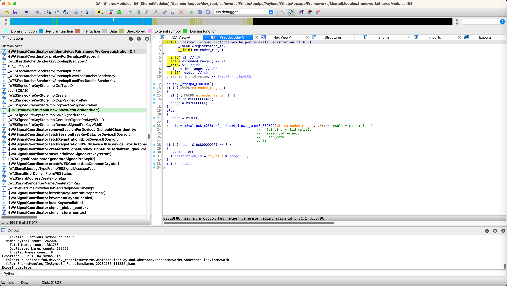
和实际调试确认，的确就是的我们要找的逻辑。
具体过程详见：
- 【未解决】iOS逆向WhatsApp：-[WASignalKeyStore saveToKeychainIdentityKeypairData:registrationIdData:]
- 【未解决】iOS逆向WhatsApp：-[WASignalCoordinator createAndSaveIdentity]
- 【未解决】iOS逆向WhatsApp：signal_protocol_key_helper_generate_registration_id
注：
期间模拟代码首次运行，还涉及到：
修改寄存器，让代码走另外分支
详见：